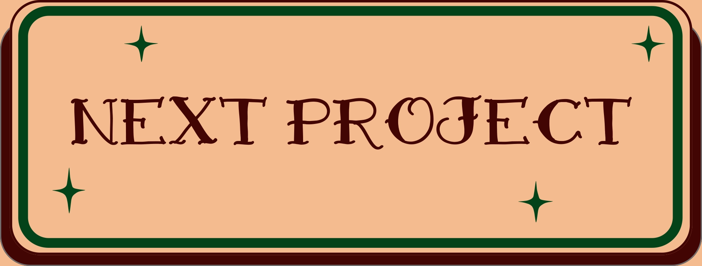
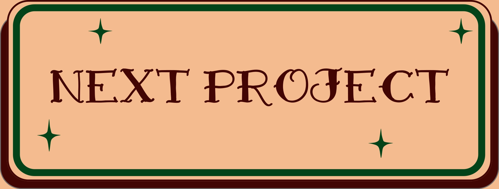

I temaet emnesite lærte jeg at designe et website fra bunden. Her udarbejdede jeg et moodboard samt styletile. Vi fik til opgave at arbejde ud fra en bestemt stil, og jeg har derfor lært at kunne lave et design til et website ud fra en specifik stil. Her lærte jeg også at lave wireframes og layoutdiagrammer selv, og derefter implementere dem ved hjælp af CSS. Jeg lærte også at gøre mit website responsivt vha. mediaqueries, så layoutet tilpasser sig forskellige skærmstørrelser. Jeg brugte også Photoshop til at redigere mine billeder, så de passede bedre til min valgte stil, som var retro. Derudover anvendte jeg gestaltloven om nærhed. Her brugte jeg de samme front end-teknologier og plug-ins som i sidste opgave. Her lærte jeg også at bruge XD til udvikling af mock-ups samt viden om rettighedslicenser og ophavsret.
 
